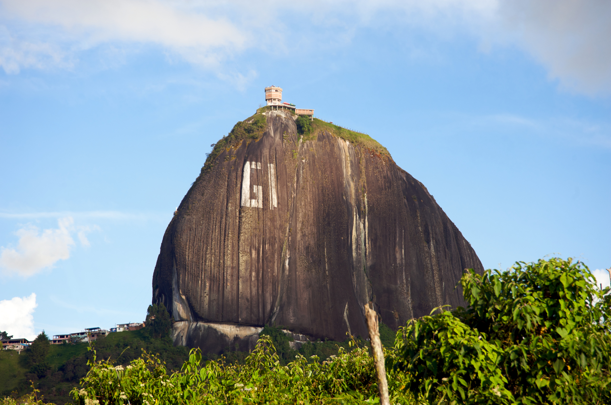

Antioquia és un dels trenta-dos departaments que formen la República de Colòmbia. La seva capital és Medellín, la segona ciutat més poblada del país. Està situat al nord-oest del país, a les regions andina i Carib, limitant al nord amb el mar Carib (oceà Atlàntic), Còrdova i Bolívar, a l’est amb Santander i Boyacá, al sud amb Caldas i Risaralda, ia l’oest amb xocar. Amb uns 6 500 000 habitants el 2015 és el departament més poblat i amb 63 600 km², el sisè més extens, per darrere d’Amazones, Vichada, Caquetá, Meta i Guainía.
La seva organització territorial comprèn nou subregions en un total de 125 municipis. Més de la meitat de la població resideix a l’àrea metropolitana de la Vall d’Aburrá. La seva economia genera el 13% del PIB colombià, situant-se en segon lloc després de Bogotà.
Encara que abans de la conquesta espanyola ja havia assentaments indígenes en el territori, i posteriorment amb l’arribada d’aquells es van fundar algunes poblacions, la història del departament com a entitat territorial comença el 1569 quan s’ordena la seva separació de la Governació de Popayán. El 30 d’octubre de 1584 Santa Fe d’Antioquia, que abans depenia d’aquesta governació, es converteix en capital de la Província d’Antioquia. En 1830, amb la desintegració de la república de la Gran Colòmbia, torna a emergir com a província fins a 1856, quan es va conformar a Estat Sobirà.
